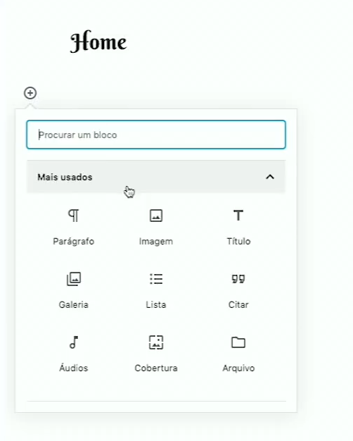

Abra o menu Home

Para selecionar a página que você quer de uma forma prática, escolha primeiro a página e em seguida click em
Quando ativar o Editor Classico que fica em Páginas, faça as seguintes alterações.
Detalhe: Quando usar o editor classico não use o editor de bloco, pois se não você perde toda a configuração.

E para Layout do conteúdo, configura: Largura total / esticada

Observe o que foi alterado para não cometer erros.
Destaque do Site
Para usar os melhores blocos, use o Spectra Gutemberg

O professor Guanabara indica que é melhor sempre usar o (UG) ou Spectra que no caso tem o menu de apresentação diferente da do curso em vídeo.